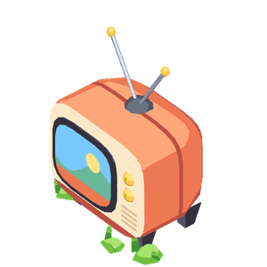

Passando: a TV do jogo, planilha
Enjoou disso: já viu muito disso.
Gosta mais de: cores vivas e som constante.
De nascença, preferia cores suaves.
O círculo é o que a TV mostra agora.
Assistiram juntos: 2 h 10 min